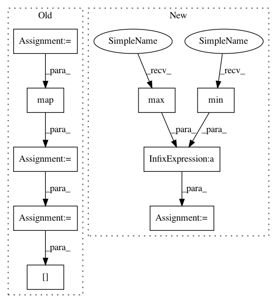

d695f661f194ba222386ac4848ac259814de3e49,ggplot/geoms/geom_abline.py,geom_abline,_plot_unit,#geom_abline#Any#Any#,16
Before Change
xlim = ax.get_xlim()
ylim = ax.get_ylim()
// Determine line function
line_func = lambda x: x*slope + intercept
// Get "x" points within limit and map to "y" coordinates
x_points = np.linspace(min(xlim),max(xlim),100)
y_points = np.array(map(line_func,x_points))
// detemine which points are still within the limit of the plot
in_range = np.logical_and(y_points > min(ylim),
y_points < max(ylim))
// If some points are withinn the plot draw them on
if np.sum(in_range) > 0:
x_points = x_points[in_range]
y_points = y_points[in_range]
ax.plot(x_points,y_points,**pinfo)
After Change
ax.set_autoscale_on(False)
xlim = ax.get_xlim()
_x = np.array([np.min(xlim), np.max(xlim)])
for i in range(len(slope)):
_y = _x * slope[i] + intercept[i]
ax.plot(_x, _y,
linewidth=linewidth[i],
linestyle=linestyle[i],
alpha=alpha[i],
In pattern: SUPERPATTERN
Frequency: 3
Non-data size: 9
Instances
Project Name: has2k1/plotnine
Commit Name: d695f661f194ba222386ac4848ac259814de3e49
Time: 2014-04-29
Author: has2k1@gmail.com
File Name: ggplot/geoms/geom_abline.py
Class Name: geom_abline
Method Name: _plot_unit
Project Name: ContextLab/hypertools
Commit Name: 3c8f5966e66f2222d2cfa3770d2ac923d254b61a
Time: 2016-12-20
Author: andrew.heusser@gmail.com
File Name: python/hypertools/_shared/helpers.py
Class Name:
Method Name: vals2colors
Project Name: has2k1/plotnine
Commit Name: d695f661f194ba222386ac4848ac259814de3e49
Time: 2014-04-29
Author: has2k1@gmail.com
File Name: ggplot/geoms/geom_abline.py
Class Name: geom_abline
Method Name: _plot_unit
Project Name: ContextLab/hypertools
Commit Name: 50f590603a1dd562453926edaab69267633b8455
Time: 2016-12-20
Author: andrew.heusser@gmail.com
File Name: python/hypertools/_shared/helpers.py
Class Name:
Method Name: vals2colors